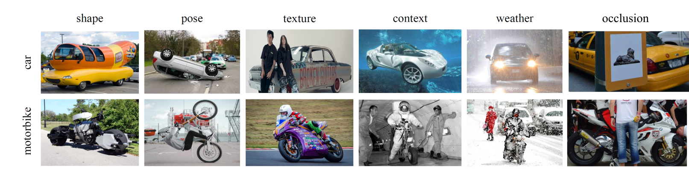

Challenge Instruction
Dataset

ROBIN is a benchmark dataset for diagnosing the robustness of vision algorithms to individual nuisances in real-world images. ROBIN builds on 10 rigid categories (aeroplane, bus, car, train, boat, bicycle, motorplane, chair, dining table, sofa) from the PASCAL VOC 2012 and ImageNet datasets, and includes outof-distribution examples of the object's 3D pose, shape, texture, context and the weather conditions.
Statistics
Placeholder
Detailed information can be found in our paper
Download
Train and Validation set can be downloaded from here.
Test set will not be available for competitors to download. Instead of submitting predictions on test set, competitors need to upload the trained model weight and inference code on Codalab for online evaluation.
Evaluation
Test set will not be available for competitors to download. Instead of submitting predictions on test set, competitors need to upload the trained model weight and inference code on Codalab for online evaluation.
Submission
Placeholder
Prize
The top-performing teams will be invited to publish in an IJCV special issue. There will also be cash prizes for the top-performing teams.
Important Dates (Tentative)
| Description | Date |
|---|---|
| Training data and development kit will be released | May 27th, 2022 |
| Phase-1 starts: Codalab open with inital test set | June 15th, 2022 |
| Phase-2: Final test set released on Codalab | August 30th, 2022 |
| Submission deadline | September 30th, 2022 |
| Challenge report deadline | October 7th, 2022 |
Citing
If you find the dataset useful for your research, please consider citing the paper.
@article{zhao21robin,
author = {Bingchen Zhao and Shaozuo Yu and Wufei Ma and Mingxin Yu and Shenxiao Mei and Angtian Wang and Ju He and Alan Yuille and Adam Kortylewski},
title = {ROBIN: A Benchmark for Robustness to Individual Nuisances in Real-World Out-of-Distribution Shifts},
journal = {arXiv preprint arXiv:2111.14341},
year = {2021}
}